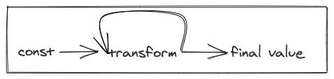

Basic Examples¶
Note
Be sure you have followed the instructions in Setup for importing dependencies before running examples.
Const¶
In the below example we will go over transforming data and composing Stitches together.
The most basic example of a Stitch is a Stitch.const, this is analogous to a Future.const.
We can use Stitch.value and Stitch.exception to make our intentions clear when using a const. Stitch.const, .value, and .exception are by value so they aren’t evaluated lazily. The same applies to Stitch.apply, which is analogous to Future.apply, in that it wraps a computation and returns a Stitch (instead of a Future), .apply is evaluated eagerly as well.
val s: Stitch[Int] = Stitch.value(0)
val f: Future[Int] = Stitch.run(s)
Await.result(f) // result: 0
Stitch.const, Stitch.value, and Stitch.exception are slightly different compared to other Stitches since unlike other Stitches, these are safe to re-run.
Transformations and Effects¶
By running the Stitch we get a Future that will complete when the Stitch is done. In the above example the future will contain the value 0. We can expand on the above example by composing some simple transformations that you’re likely familiar with from Futures.
val s = Stitch.value(0)
.map(_ + 1)
.flatMap(v => Stitch.value(v + 1))
.onSuccess(v => println(s"It was successful! We got $v"))
Await.result(Stitch.run(s)) // result: 2

The above will yield a value of 2 and print “It was successful! We got 2”. The above was a straightforward transformation and side effect. But since it’s important to ensure that all parts of the Stitch you want to run are included in the final Stitch, let’s go over how to do this more generally.
val s = Stitch.value(0)
.map(_ + 1)
.applyEffect(_ =>
Stitch
.sleep(Duration.fromSeconds(3))(new JavaTimer())
.map(_ => println("this is a side effect")))
.flatMap(v => Stitch.value(v + 1))
// paste the below in separately due to an issue with the repl
Await.result(Stitch.run(s)) // result: 2
In the above snippet we are utilizing applyEffect to let us run any arbitrary Stitch as a side effect. This kind of composition is important to ensure that side effects actually execute. This is called out more later in the Lazy section, but to have the side effect run we need to ensure that these side effects become part of the Stitch that is run. In this case, the Stitch’s completion is delayed until the side effect is completed.
When something is added as an effect, it is added to the query, but that doesn’t make it asynchronous. A Stitch will normally complete only after all parts of the execution graph are completed. However, if you want to fire-and-forget then you can use Stitch.async. An async Stitch is special in a few ways, if it fails, the original Stitch won’t be impacted, and the Future returned by Stitch.run will complete even if the async operation has not.
val s = Stitch.value(0)
.applyEffect(_ => Stitch.async(
Stitch
.sleep(Duration.fromSeconds(5))(new JavaTimer())
.map(_ => println("this is an async side effect"))))
Await.result(Stitch.run(s)) // result: 0, completes without waiting
Even though the effect will sleep for 5 seconds before completing, the returned Future will complete without waiting, “this is an async side effect” will be printed after the returned Future is already completed.
Join, Collect, and Traverse¶
join lets you join Stitches together so they become part of the same query. By joining Stitches together, operations can be batched across all the joined Stitches.
val s = Stitch.join(Stitch.value(0), Stitch.value(1), Stitch.value(2))
Await.result(Stitch.run(s)) // result: (0, 1, 2)
Oftentimes you will want to query over a large number of input items, however join is only useful for small tuples. Stitch provides both collect and traverse functions to connect large numbers of Stitch queries together.
collect lets you take a Seq, Map, or Option of Stitches and run them together as part of the same query, similar to join. By collecting all the Stitches together, calls across all the Stitches can be batched together.
val s = Stitch.collect(Seq(
Stitch.value(0),
Stitch.value(1),
Stitch.value(2),
Stitch.value(3)))
Await.result(Stitch.run(s)) // result: Seq(0,1,2,3)
With traverse you can define a function that will build a Stitch for each input. With collect you need to have each query built up, but with traverse, you only need the input necessary to generate the query.
val s = Stitch.traverse(Seq(0,1,2,3)){v => Stitch.value(v).map(_ + 1)}
Await.result(Stitch.run(s)) // result: Seq(1,2,3,4)
traverse is equivalent to a collect where you map over the input Seq to make each Stitch
val s = Stitch.collect(
Seq(0,1,2,3).map(v => Stitch.value(v).map(_ + 1)))
Await.result(Stitch.run(s)) // result: Seq(1,2,3,4)
A common mistake is to have multiple independent Stitch.run calls by doing something like
val requests: Seq[T]
def mkStitch(t:T): Stitch[U]
requests.map(r => Stitch.run(mkStitch(r))) : Seq[Future[U]]
This could be rewritten as Stitch.run(Stitch.traverse(requests)(mkStitch)) : Future[Seq[U]] to take full advantage of Stitch’s batching across all the Stitches.
Refs¶
Each Stitch must only ever be run once, but parts of a Stitch can be reused elsewhere in the same Stitch. When part of a Stitch is reused within the same Stitch, it will be executed each time.
val s0 =
Stitch.Unit.onSuccess(_ => println("this will execute twice"))
val s1 = s0.before(s0)
Await.result(Stitch.run(s1))
This Stitch will run similar to this, with the transform (onSuccess) occurring again
We can flatten this to this simpler graph.

In the above example, “this will execute twice” prints out twice. This differs from Future where once it’s run the result is memoized so it’s only ever executed once. There will be times where this type of multiple execution will be desired but there will also be occasions where it’s not. That’s where Stitch.ref comes in.
val s0 = Stitch.ref(
Stitch.Unit.onSuccess(_ => println("this will execute once")))
val s1 = s0.before(s0)
Await.result(Stitch.run(s1))
With the ref, the result of the transform (onSuccess) essentially becomes a const which is simply accessed for it’s value instead of a Stitch that gets executed.

With a Stitch.ref, once the ref has been run in one part of the Stitch, when it’s used again in another part of the Stitch, it will just get the result and not execute again.
CallFuture¶
Futures can be composed within Stitches using Stitch.callFuture. This lets you use code which works in terms of Futures within Stitch.
In this example we have a mockServiceCall which simulates making a call to a service by sleeping then returning a result.
implicit val timer: Timer = new JavaTimer()
def mockServiceCall() = {
Future.sleep(Duration.fromSeconds(1)).map(_ => 0)
}
val s = Stitch.callFuture(mockServiceCall())
// paste the below in separately due to an issue with the repl
Await.result(Stitch.run(s)) // result: 0, after a 1sec delay
Using callFuture can allow you to easily inter-operate with Futures, however it can come at a cost and it can negatively impact downstream batching behavior. In some cases it may be beneficial to utilize Groups instead as they will generally have better batching behavior for downstream calls.
Calls¶
The most fundamental operation in Stitch is an atomic query. A Stitch atomic query is represented by a call, which accepts a single key and returns a single value. The key can be any type K and the value can be of any type V . A Stitch call also requires a group to handle the batching.
So far we have covered transformations and integration with Futures, however none of these take advantage of the main benefit you get from using Stitch, batching. This is where Stitch.call comes in. A Stitch.call accepts a single key and returns a single value but behind the scenes it handles batching for you.
Most services abstract away the actual call but not all do. If they don’t or if you are writing a Service Adapter then you’ll need a Group. Groups aggregate calls during Stitch graph simplification. The details of Groups are covered in the Group section, but for now, think of these Groups as ways to call a service that adds 1 to an integer.
In the below example, we have a group g, this group simply adds 1 the argument passed into it.
val g = new SeqGroup[Int, Int]{
def run(keys: Seq[Int]): Future[Seq[Try[Int]]] =
Future.value(keys.map(i => Return(i + 1)))
}
val s = Stitch.call(0, g)
Await.result(Stitch.run(s)) // result: 1

A Stitch.call is just another type of Stitch and can be composed with other Stitches.
val g = new SeqGroup[Int, Int]{
def run(keys: Seq[Int]): Future[Seq[Try[Int]]] =
Future.value(keys.map(i => Return(i + 1)))
}
val s = Stitch.join(
Stitch.call(0, g),
Stitch.call(1, g))
Await.result(Stitch.run(s)) // result: (1,2)

With these 2 Stitch queries joined, when they are run, they get batched together.
Next Failure handling